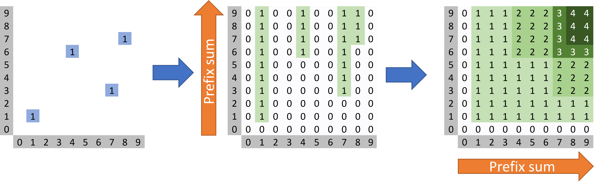
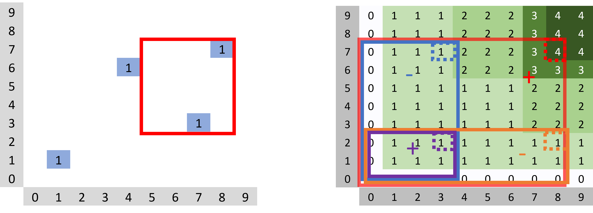
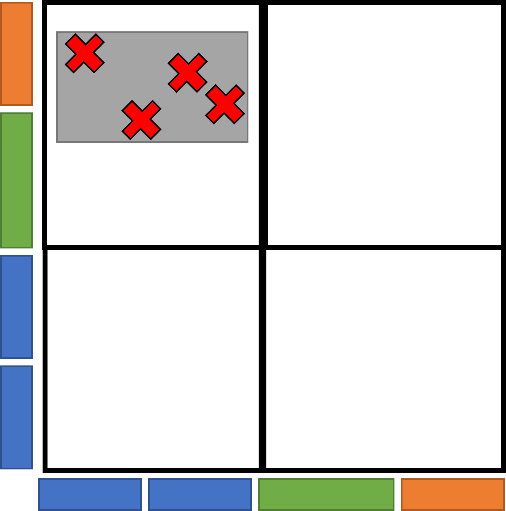
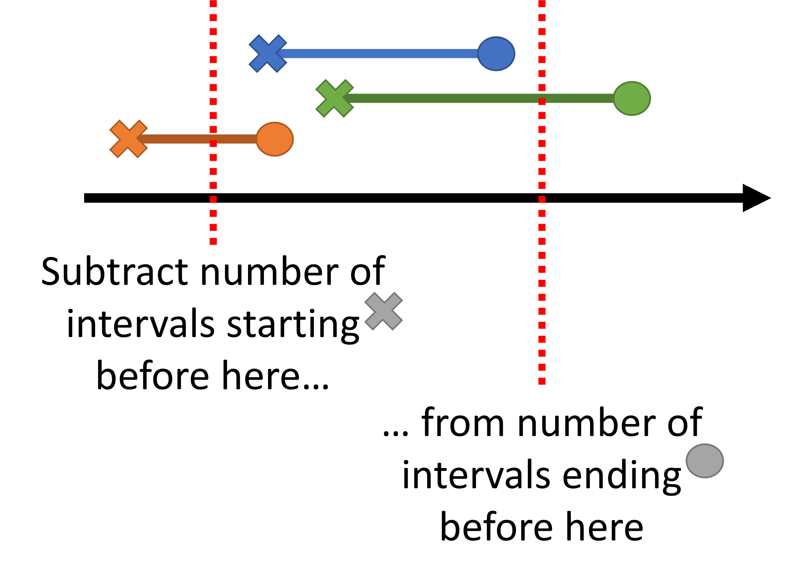
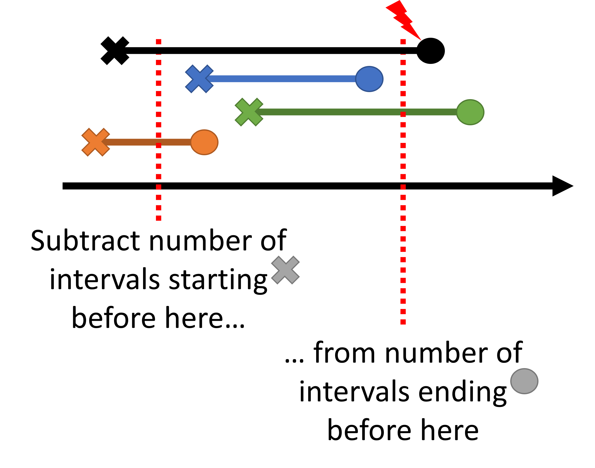
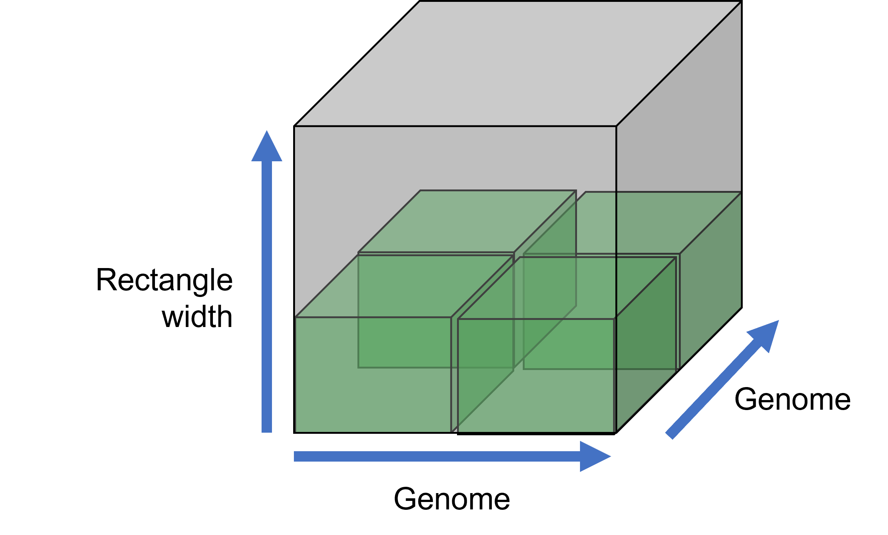
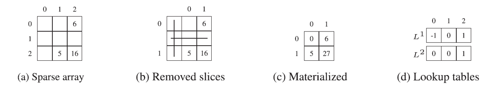
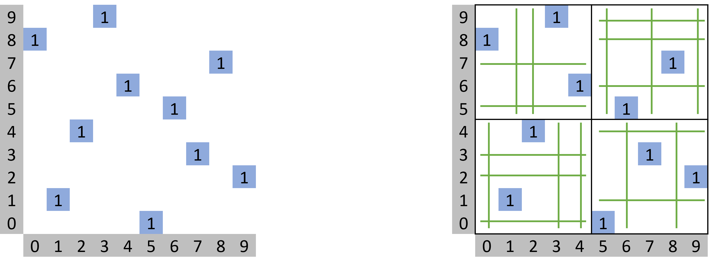
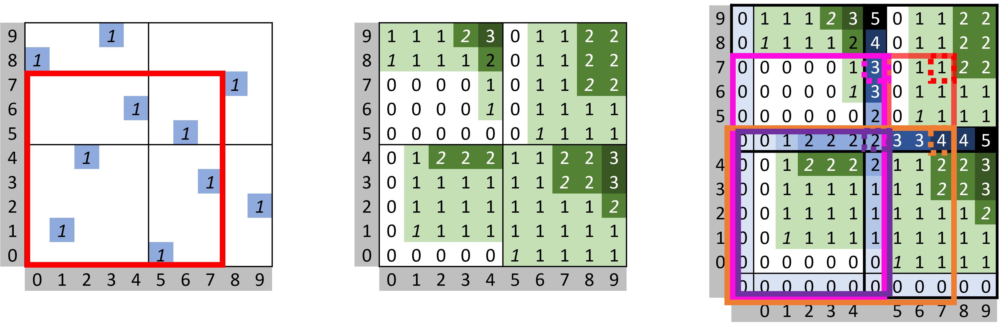
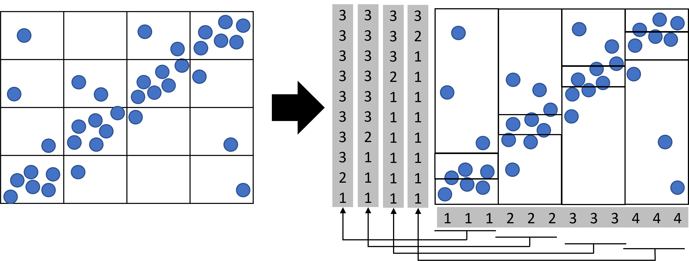

Smoother Manual
Bulk of the manual
Table of Contents
Importing Data
Preprocessing Data (Anna)
generating the chromosome lengths file annotation file bed & wig files input formats output all alignments provide some sample files
Create Index (Anna)
creating an empty index adding genome sizes and annotation file min bin size parameter
Adding Replicates (Anna)
adding hi-c or radicl-seq replicates
Adding Normalization Tracks (Anna)
adding read or wig normalization tracks
Adding Grid-seq normalizations (@todo better name) (Markus)
creating relevant plots (infliction point) setting parameters adding as normalization track
List of Plots and what they show (Anna)
the heatmap the ratio & coverage plots mention hovers also include status text & command line output
List of Buttons and their functionality (Both)
top to bottom list of things group by category don’t forget the bokeh buttons
Normalization (Markus)
Normalize by
Smoother can normalize data in various ways. Some of them are suited for symmetric data (e.g. Hi-C), some for asymmetric data (e.g. RADICL-seq). For some normalizations, views or different regions or with different bin sizes are not comparable. Note that for these normalizations, even zooming or moving around may skew the displayed values. It is recommended to use these normalizations merely as an exploratory tool but never to compare e.g. two screenshots of different regions.
Name |
Picture |
Description |
For Symm. |
For Asymm. |
Always Comparable |
|---|---|---|---|---|---|
Largest Rendered Bin |
Divide the number of interactions in each bin the number of interactions in the largest rendered bin. This keeps differences between bins nicely visible by always ensuring that the colorscale is used fully. |
✔️ |
✔️ |
||
Reads per Million |
Divide the number of interactions in each bin by the number of million reads in the dataset. |
✔️ |
✔️ |
✔️ |
|
Reads per Thousand |
Divide the number of interactions in each bin by the number of thousand reads in the dataset. |
✔️ |
✔️ |
✔️ |
|
Column Sum |
Divide the number of interactions in each bin by the number of interactions in the complete column that bin belongs to. |
✔️ |
✔️ |
||
Row Sum |
Divide the number of interactions in each bin by the number of interactions in the complete row that bin belongs to. |
✔️ |
✔️ |
||
Coverage of Normalization Reads (Absolute) |
Divide the number of interactions in each bin by the coverage of the normalization datasets. With the ‘Normalization Rows’ and ‘Normalization Columns’ pickers, you can decide what datasets should be used for the columns and rows. |
✔️ |
✔️ |
✔️ |
|
Coverage of Normalization Reads (Scaled) |
Same as the absolute version, but makes sure the complete colorscale is used. |
✔️ |
✔️ |
||
Binominal Test |
Use a binominal test to determine weather each bin is statistically significant, in it’s row. This strategy was created by Bonetti et al. for RADICL-seq RNA-DNA interaction data [3]. The acceptance p-value can be modified with a slider. *For views that do not show the entire genome, we use an approximation for the p-value adjustment that is performed after the binominal test. |
✔️ |
✔️* |
||
Iterative Correction |
Use the iterative correction approach developed for Hi-C data by Imakaev et al. [4]. @todo this is ICE correct? |
✔️ |
✔️ |
Since smoother is capable of normalizing data on the fly, you can zoom in to a region of interest and then dynamically change the normalization strategy.
Groups A and B are normalized individually and then combined according to the ‘Between Group’ setting (see Replicates section). The ‘In Group’ operation (see Replicates section) is applied before the Normalization.
Color Scale Begin & Color Scale Log Base
After normalization, the values in each bin are between zero and one. Before displaying these values in the heatmap, we apply a logarithmic transformation. Like with logarithmic scales, this keeps all values in the same order but this makes a difference between two small numbers appear bigger than the same difference between two bigger numbers. You can fiddle with the strength of this effect using the ‘Color Scale Log Base’ slider. In brief, higher values for the log base increase the difference between small numbers but make larger number look more similar. Lower values do the opposite. Setting log base to zero displays the numbers without any transformation.
Additionally, the ‘color scale begin’ slider can be used to cut off the bottom of the color scale, i.e. to only show bins with more than x interactions. This option subtracts from the raw number of interactions; it is applied before normalization and application of the log scale.
In detail, the function we use is:

, where x and y are the un-normalized and normalized interaction frequencies while a is the log base parameter. With varying values for a, this function always satisfies f(0)=0 and f(1)=1. for a=0 the function is undefined but approaches the 45-degree diagonal, so we hardcode f(x)=x for a=0.
Using Slurm (Markus)
Smoother is set up to be run on a server within the Slurm Workload Manager. For this, you need to log into the main node of the server, with ssh port forwarding. The default port that needs to be forwarded is 5009; this requires the following login command:
ssh -L 5009:localhost:5009 -t your_user_name@your_server.com
Then you can navigate into the smoother folder and call the srun.sh script.
./srun.sh
This will then log into one of the slurm-client nodes (again using the port forwarding) and start smoother there. The command will print an url on your terminal. Follow this link with any webbrowser to open smoother on the server.
Installing via GitHub (Markus)
For installing smoother via github, run the following commands:
# clone repository
git clone https://github.com/MarkusRainerSchmidt/smoother
cd smoother
# create the required conda environment
./conda_env/create_smoother_env.sh
# @todo run the install commands -> see bioconda integration
Setting up a Webserver (Markus)
smoother can be deployed as a webserver so this should be described
The Datastructure (Markus)
Smoother uses a datastructure called libSps implemented in C++ for querying the interactions as effectiveley as possible. You can find the GitHub of libSps here.
Algorithmic Description
libSps provides several features that make it possible to bin, normalize and visualize nucleic acid interaction data on-the-fly. In brief, these are:
F1: Looking up the number of interactions within any rectangle in constant time (i.e. the lookup time is independent of the total number of interactions and the number of interactions in the rectangle)
F2: During this lookup, interactions can be filtered for mapping quality (again this is done in constant time)
F3: libSps can distinguish between interactions that map to multiple consecutive loci and multiple distributed loci (we want to count the first but exclude the latter)
F4: The memory requirements for libSps are optimized
F1: Constant lookup times
libSps uses a technique called prefix sums [1] for storing interaction counts. With prefix sums, each cell in a matrix stores the number of interactions that can be found to its bottom-left.
Example prefix sum matrix. The left picture shows the positions of individual points. The middle picture shows the matrix entries after prefix sums have been computed for the y-dimension. The right picture shows the matrix entries after prefix sums have been computed for the x and y dimension.
Once the prefix sums have been computed, looking up the entry at a position x/y returns the number of points between 0/0 and x/y. By looking up 4 entries and adding their values together, we can query and arbitrary rectangle. This lookup is extremely fast, as it is independent of the total number of interactions and the number of interactions in the queried rectangle.
Querying a prefix sum matrix. Four lookups are needed, one lookup positioned at each corner of the queried rectangle. The top-left and bottom-right corner values are subtracted from the value at the top-right to exclude the area to the left and bottom of the queried rectangle (left), respectiveley. This subtracts the area to the bottom-left of the queried rectangle twice. To make up this difference the value of the bottom-left corner lookup is added to the previous result.
This approach enables us to count the number of interactions in any bin on-the-fly. In turn, this makes it possible to have varying bin-sizes and normalizations.
F2: Filtering for mapping quality
Smoother has a slider to dynamically filter out reads with too low or high mapping qualities. Mapping qualities are scores that express an aligners confidence that the read was mapped correctly. For each interaction (i.e. read-pair with a mapping quality), we place the point at a height according to the mapping quality of the reads. If both reads have different mapping qualities, we use the lower value.
Then we query cubes instead of rectangles, where the bottom and top of the cubes are defined by the mapping quality slider.
Filtering mapping qualities using a 3rd dimension.
F3: Interactions that map to multiple consecutive loci
Genomes have many forms of repetition. For example, In Trypanosome brucei, the organism we study, genes are often placed in arrays. I.e. there are many immediateley consecutive copies of the same gene on the genome. Interactions that map to one of these genes will most likely map to all copies of that gene. Often, a bin will span over the entirety of such a gene array. In this case, we want to count interactions that map to all genes in the array towars the bin, as, no matter which gene copy the interaction truly originates from, we know that it originates from within the bin. In other cases, where an interaction maps to several positions in different bins, we cannot decide which bin to count the interaction towards and therefore filter out the interaction instead.
In the following, we show how we solve the above problem.
First, instead of storing the prefix sums for individual interaction points, we summarize all mapping positions of each interaction into one rectangle. Here, the rectangle is placed so that it encompasses all mapping positions.
Interaction with multiple mapping positions turned into an rectangle.
We then compute prefix sum matrices seperately for all four corners of the rectangle. In the following, we go down to Intervals (i.e. 1-dimensional rectangles) for a simpler example, but in principle everything works the same in the 2-dimensional or n-dimensional case.
To count the number of intervals between a given start and end position, we look up the number of intervals that end before the given end position and the number of intervals that start before the given start position. Then we substract the latter from the former to receive our count. Both lookups can be done in constant time using the two prefix sum matrices.
Counting intervals instead of points using prefix sum matrices.
This strategy works fine as long as there is no interval that completely encloses our query region.
Too large intervals break our strategy.
However, we already developed a strategy for filtering out interactions based on a single numerical property: See F2 - Filtering for mapping quality. We hence reuse this strategy, placing the rectangles at a position given bey their width and height in a 4th and 5th dimension. Again, we can then use the bottom and top positions of our 5d-orthotope queries (5-dimensional “cubes”) to filter out all rectangles that are too wide or high.
Adding two more dimensions to filter rectangle width and height.
F4: Optimizing memory requirements
The strategy, as described above, would not be feasible as the required matrices are simply too large to be stored or computed. For example, we work with a genome assembly of Trypanosome brucei that contains 50,081,021 nucleotides. Rather small considering e.g. the size of the human genome. Even so, a genome x genome x mapping confidence matrix is of size 50,081,021^2 * 256 = 583,964 Terrabytes (even if each prefix sum could be stored in a single byte). This is obviously completely unrealistic and will fit on any hard drive.
We hence use a customized version of a strategy called “sparse prefix sums” by Shekelyan et al. [1] to reduce the index size. We give a quick summary of the part of their method that is relevant to us:
They remove empty rows and columns from point matrices using lookup tables:
Removing slices.
However, this strategy breaks down for large datasets. To split too large datasets down into smaller ones they use overlays.
Left: eventhough the matrix is sparse, there are no empty columns and rows. Right: by splitting the matrix into four submatrices, empty columns and rows can be removed again.
However, if we now compute the prefix sum for the individual submatrices we loose the ability to query arbitrary rectangles over our dataset. To fix this, each overlay stores an additional first column and first row that holds the prefix sums of the entire dataset for those positions. By then querying
one position on the additional column,
one on the additional row,
one on the additional bottom-left corner
and one inside the overlay
the prefix sum of arbitrary points can be queried again.
Querying overlays.
Combined with the querying technique in “F1: Constant lookup times” this gives us the ability to query arbitrary rectangles again.
So much for the technique of Shekelyan et al. [1]. With our dataset, we, however, ran into problems using this technique. Overlays work best if points are evenly distributed among them. Imagine a worst case, where all points are within the same overlay. In that case we still pay the memory we would require for storing the points without overlays, but additionally have to store the remaining empty overlays.
Unfortunately, for our data we come close to this worst case. Nucleic acid interactome data is heavily clustered along the 45-degree diagonal. We found that there was no adequate overlay size tradeoff. Either there would be too many empty overlays to store or the overlays on the diagonal would contain matrices that were too large to store.
Hence, we developed a strategy to distribute overlays better. We break the grid-like organization of overlays and compute overlay height independently for each column. We do this via the same lookup table strategy used for removing empty matrix columns and rows. Here we use the lookup table in dimension 1 first. Dimension 2 then has an individual lookuptable for each column of dimension 1. Here, the lookup of dimension 1 determines the used lookup table used for dimension 2. This finally gives us a position in the materialized overlay grid.
Overlay organization for nucleic acid interactome data.
Fileformat specification
Smoothers preprocessing creates several files. In brief, these files contain the following information:
file |
desc |
|---|---|
.desc |
The description of all points. |
.points |
The coordinates of all points. |
.prefix_sums |
The prefix sum for one position in space. |
.coords |
The translation from real to sparse coordinates. |
.overlays |
The overlay grid. |
.datasets |
The individual datasets. |
meta |
Some metadata about the index. |
Apart from the meta file, all files exist once for the interaction and once for the normalization data.
The exact content of these files is described here.
Implementation Details
Libraries
Smoother is implemented in two separate parts:
A Python 3 project that handles data visualization and normalization.
A C++ library that deals with the interaction counting and filesystem.
The python project uses bokeh [5] to create an interactive viewer. The C++ library uses pybind 11 [6] to create an interface for the python project and stxxl [7] for having access to a cached vector implementation.
Runtime benchmarking
Verification of Normalizations
Citing Smoother
References
[1] Shekelyan, M., Dignös, A. & Gamper, J. Sparse prefix sums: Constant-time range sum queries over sparse multidimensional data cubes. Information Systems 82, 136–147 (2019).
[2] Schmidt et al. @todo
[3] Bonetti, A. et al. RADICL-seq identifies general and cell type–specific principles of genome-wide RNA-chromatin interactions. Nat Commun 11, 1018 (2020).
[4] Imakaev, M. et al. Iterative correction of Hi-C data reveals hallmarks of chromosome organization. Nat Methods 9, 999–1003 (2012).
[5] Bokeh…
[6] Pybind11
[7] stxxl
Thanks to…
Bokeh
Stxxl
Sparse Prefix Sums paper
Papers with the normalizations
Dataset origin